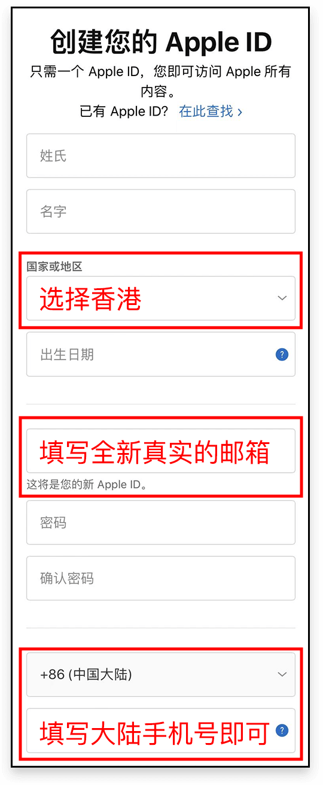
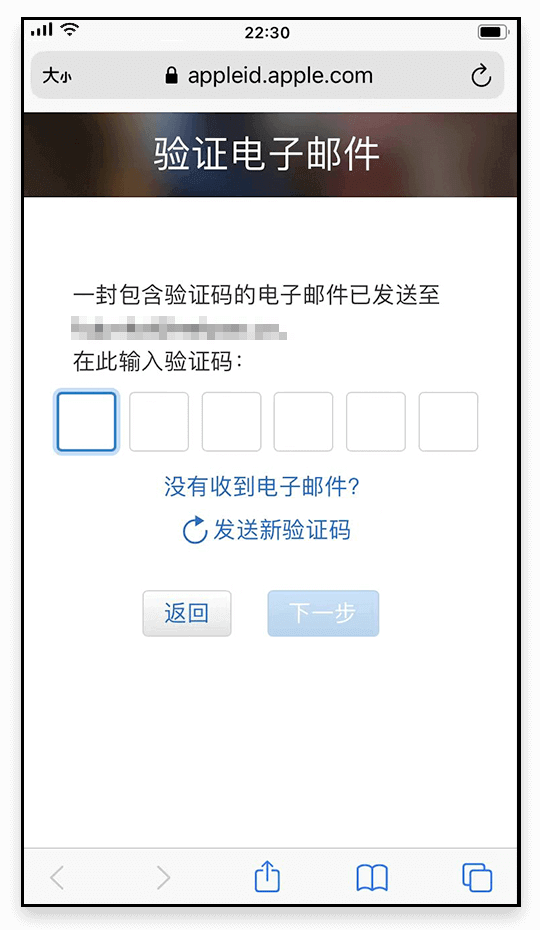
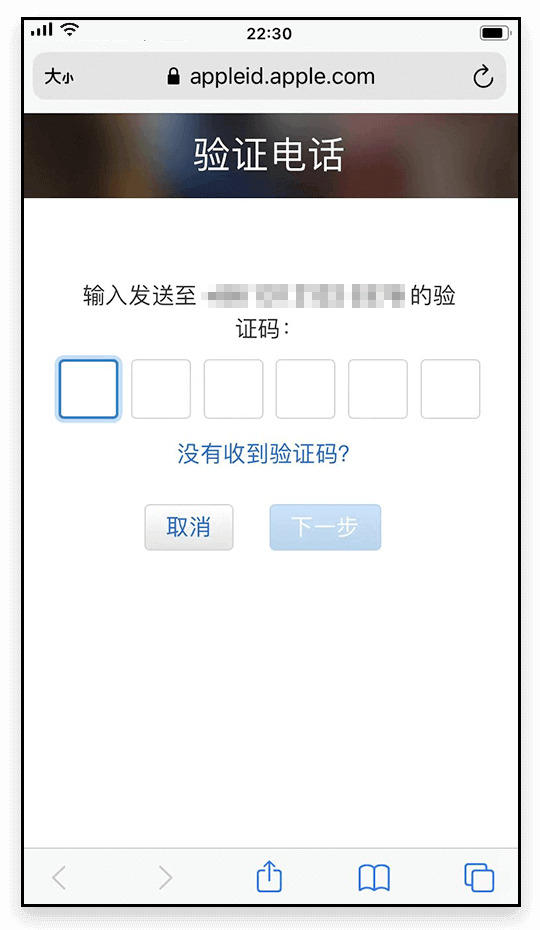
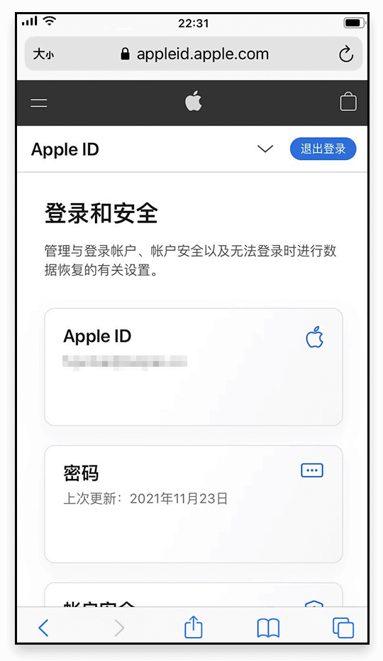
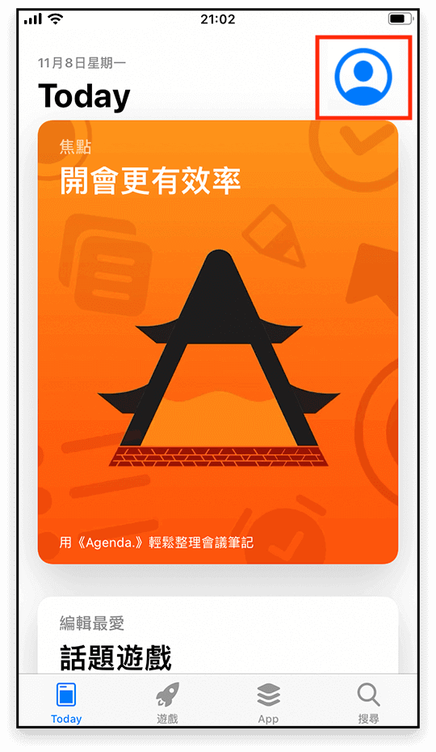
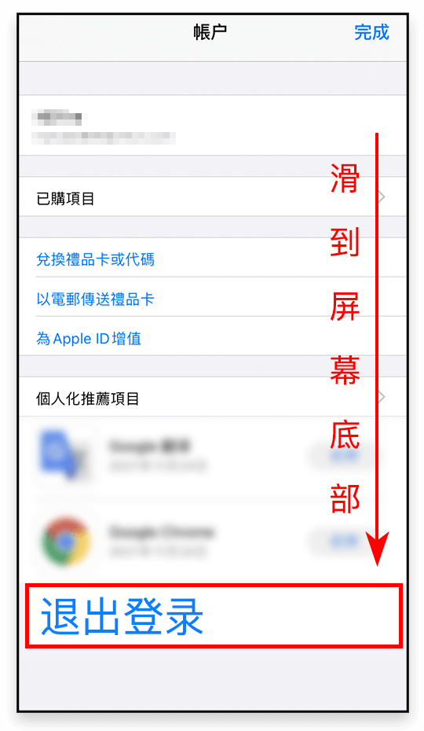
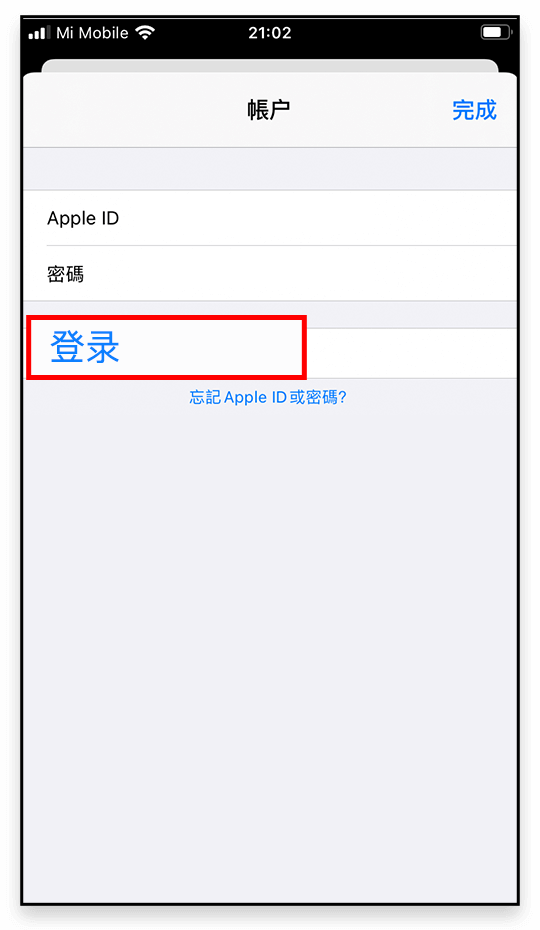
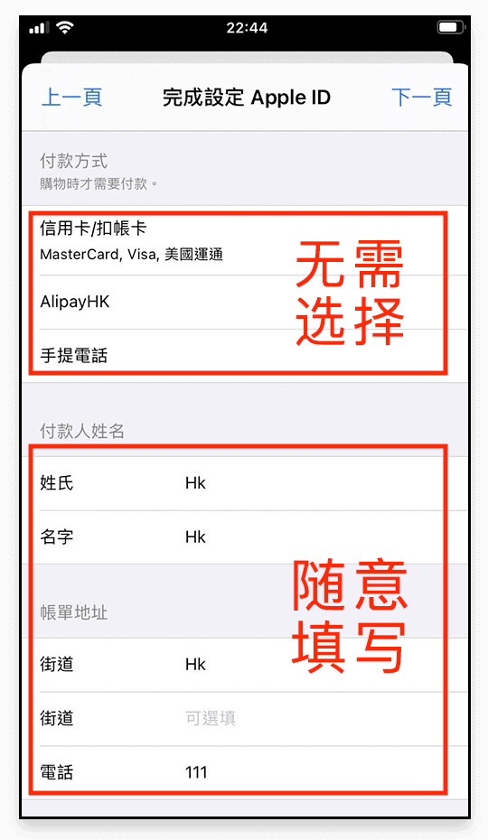

第一步：
进入 Apple 的创建 Apple ID 网站： <https://appleid.apple.com/account>
第二步：
根据提示输入您的个人相关信息，注意在国家和地区请选择 <香港>，另外：
- 邮箱：需要准备一个从未注册过 Apple ID 的 <全新真实>邮箱用来收取验证码；
- 手机号：支持 <中国大陆>的手机验证；

第三步：
所有的信息输入完成后会进入到 <邮箱验证>

第四步：
邮箱验证完成后会进入到 <手机号验证>

第五步：
当进入到 <登录和安全> 页面说明您的 <香港 AppleID> 已经注册成功了；

第六步：
打开 App Store  ，点击 <右上角图标>；
，点击 <右上角图标>；

第七步：
选择 <退出登录>，记得一定要滑倒页面底部才能看到；

第八步：
在 App Store 中登录您刚刚注册的 <香港 AppleID> ，这里记得选择 <登录> ，不要点击右上角的完成；


温馨提示
新的 Apple ID 在首次下载软件时，会要求设定 Apple ID 的一些信息，点击 <检查> ，然后按照提示一步一步操作即可，需要注意的是 <付款方式> 不要做任何选择，其它的内容可随意填写。
